向量化加速:尝试基于SIMD加速最大子矩阵和问题
最大子矩阵和问题的向量化加速探究与扩展
课程名称：汇编与接口
学生姓名：云中君
学号：********
邮件地址：********@zju.edu.cn
一、探索背景
在探索实验开始前，我回顾了过去自己写的很多工程，以从中选择合适的代码进行优化。我尝试着优化了数据库课程中实现的MiniSql和其他课程一些大程，但是发现对于这些大型工程，涉及的代码过于繁杂，且不可避免地使用了很多递归函数，我思索了很久也没有找到合适的加速方法，结果反而使得程序更慢。屡次碰壁的情况下，我发现自己在数据结构基础中，困难模式的程序中有一个是最大子矩阵和的问题，程序相对简洁，利于分析，也涉及到了矩阵相关的运算和循环，在代码结构上，十分契合本次探索的主题，故就该问题进行了向量化加速。
最大子矩阵和问题的具体描述如下：
1 | 最大子矩阵问题是基于《数据结构与算法分析》教程中“最大子序列和”问题的拓展，它要求我们将一维问题（序列）扩展为二维（矩阵）。更具体地说，我们需要设计 O(N^6)，O(N^4)以及更好的算法，以找到在给定的 N×N 矩阵中其所有元素之和为最大的子矩阵，并给出这个最大的和。 |
在程序设计上，我完成了O(N^6)，O(N^4)以及更优的在线算法，由于O(N^4)和在线算法结构相对类似，所有这里我对前两个复杂度的算法进行了优化。
二、探索过程
1. intrinsics选择和文件构成
在本实验中，我调用的版本是向量指令是AVX2，具体来说，在程序中包含了头文件#include <immintrin.h>，使用对应的intrinsics来实现向量化加速。
包含测试文件的目录结构如下：
1 | ├── O4_Test.c //包含了O(N^4)未优化和优化的算法代码 |
在编译时，需要加入-mavx2 -mfma等flag，以支持对应的intrinsics。
2. O(N^6)算法优化
2.1 原始算法描述
该算法的思路是十分简单的循环求解，即对每一个矩阵都进行遍历求和，详细伪代码如下：
1 | float maxsub-matrixsum1{float M[ ][ ]: the matrix, int N: the size of the matrix} |
2.2 依赖关系分析和向量化尝试
正是由于6层循环的嵌套，使得整体程序的效率十分低，复杂度也高达O(N^6)。很自然地，我们可以尝试使用向量化的方式，来对该算法进行加速。
首先我们分析代码的结构，在6层循环当中，我们从内而外看，先进行简化，可以看到其最核心的加法操作可以抽象为：
1 | for(int i = 0; i <= m; i++ ) |
分析其依赖关系，可以看到在循环内，大致有如下图的几种数据依赖：
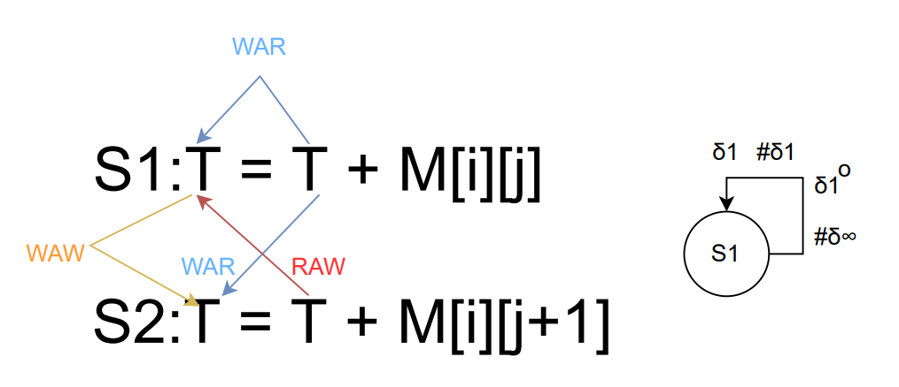 因为T(即暂时存当前操作矩阵和的遍量ThisSum)这一跨循环的共有变量存在，在执行过程中数据之间存在了很大的依赖性，其中也存在真实依赖(RAW)，使得向量化难以继续。
但是由于T的最终目的是运算当前子矩阵的元素和，具体执行的手段其实可以变化，我们只需要在保证结果正确的前提下，尽可能实现向量化即可。我们可以通过重命名的技术，消除处理RAW之外的反相关和输出相关；对于真相关，我们完全可以分别计算上图中S1、S2语句中的T，只需要在最后将这两个值相加即可，即使未能消除的循环间的真相关，也不会影响程序执行。
基于这一思路，我们可以利用向量化的方法，对内层循环的加法进行并行化。我们可以将原先的T分成8个32位float变量，构成一个256位的sum向量；而对于每一行，我们一次load 8个变量到value向量，分别让其与sum向量进行打包相加，从而使并行化成为可能。在最后，我们只需一次性将sum向量导出到数组中，并进行相加，即可得到当前子矩阵的和，这样就实现了简单的向量化并行，具体算法如下。
1 | //Matrix Add--O6_revise1 |
这样的优化仅仅在内层循环，但是性能优化也提升为原来的3倍多，我也尝试了进一步展开外层循环，以进一步地并行化。但是仔细分析，发现很难再减少跨loop导致的加法次数，而向量化指令由于操作数的有限，并不能很好的发挥作用，在处理外层循环时，使用多线程编程可能会是处理比较复杂操作的好的选择。不过展开后仍然发现速度有轻微的提升，并不明显，推测是展开后缓存等效率上，可能会在某些情况下有所优化，但是也无从验证。
1 | //unrolling the loop, makes little change... |
3. O(N^4)算法优化
对于前面的O(N^6)的算法而言，由于循环有6层，而内部仅有一个加法操作，可向量化的空间并不多，而且算法时间复杂度过高，在这个情况下，优化算法比起向量化并行而言，效益是更高的。所有我进一步尝试，在优化算法后，是否也可以进行进一步的向量化加速。
3.1 原始算法描述
下面是O(N^4)的算法，基本思路为将二维压缩到一维，对于矩阵确定的两行，我们可以获取这两行之间每一列的元素和，存储在数组T中，则T中任意的连续元素和，即为对应的一个子矩阵的元素和。在这个算法下，确定两行需要N^2；而每次更新T的数组需要N，并列地获得所有连续元素和需要N^2，所以总算法复杂度为O(N^4)。
1 | int maxsub-matrixsum1{int M[ ][ ]: the matrix, int N: the size of the matrix} |
3.2 向量化加速尝试
有了前面优化的实践后，我对向量化指令的熟悉程度和使用思路有了更熟练的掌握。与前面同样地，对于过多层嵌套的循环，我们也可以先抽取出内层的细节，来尝试进行向量化加速。
1 | for(int k = 0; k < N; k++ ) //Each time we only need to add the new row to the array T |
首先，对于前面O(N)的更新过程，有了前面的基础，可以很快速地完成加速，实现8次相加的并行。此处T[k]之间也没有任何依赖，所有很自然地，只需要load完成后，并行地利用向量进行加法运算即可。
1 | for( k = 0; k < ROUNDDOWN(N,8); k+=8 ) |
但是这一处的优化，反映在实际程序运行时间上，却是微不足道的。回顾此前算法课程对时间复杂度的分析，不难发现，这一算法费时间的主要部分其实是下面的O(N^2)二层循环部分，与这一部分相比，前面的O(N)部分时间其实可以忽略不计，所以优化了前面部分，才没有很明显的变化。
3.3 条件判断的处理
所以，对于全局的优化，需要重点关注对二层循环的优化。首先注意到，这是一个带条件的循环，每一次，我们需要比较ThisSum和MaxSum的值，来确定是否需要更新最大和。这一点很大程度上阻碍了我们直接使用指令进行向量化的尝试。
为了解决条件判断的问题，我们可以尝试从几个思路进行考虑：
- 按照上课提到的方法，修改我们程序表达，消除条件判断；
- 调整算法的实现，规避条件判断；
对于第一个思路，如果直接消除条件判断，我们不难想到的一种直观的方法是，把条件判断作为bool值这些形式，参与到具体的计算。对于此处的条件判断，我们可以尝试改写为：
1 | for(int k = 0; k < N; k++) |
第一种形式是最自然地想法，但是注意到我们引入了乘法，而乘法运算，我们在体系结构、计算机组成课程中都了解过，需要较多的时钟周期来完成，显然为了这样简单的操作，是得不偿失的。所以我们选择第二种，即使用bitwise的与/或操作来完成。
但是在依赖关系上，循环内层中，ThisSum、b变量(暂时存储比较结果)存在真依赖，而b的真依赖在循环之间是无关的，每个ThisSum和MaxSum对应一个唯一的b值，不会影响具体的操作。但是对于ThisSum而言，有条件比较存在，这一跨循环的依赖是难以消除的。因为对于每一次MaxSum的更新，都唯一决定于这一层循环中ThisSum的值，也就是ThisSum的值具有“记录”意义，每次修改得到的都对应最终某个子矩阵的和。所以我们不能像之前的加速方法那样对ThisSum进行分道，来破坏循环间的依赖。
但是从对O(N^6)算法的加速的经验上看，我们是不是也可以人为地处理MaxSum这一值，来破坏这一依赖关系，也就是让每次ThisSum在循环间互不相关，不会存在累加的效果。这一处的修改让人摸不着头脑，试图通过-O3查看汇编指令，让编译器给一些提示，但是发现编译器在此处并不采用向量化，只是简单的循环操作，没有采用并行。对此我思考了很久，似乎必须对代码进行重构（类似于课上讲的调换顺序的方法）才可以解决这一优化的瓶颈。
3.4 向量化遇到的瓶颈及尝试
对此我思考了两种方法，在不改变原有代码含义的基础上，通过算法的表述的改进，来试图实现优化。
3.4.1 使用矩阵操作来解决依赖
展开循环，仔细分析ThisSum的所有可能值，我们可以发现它是由下面这些值构成：
1 | 数字n：表示T[n]，以N=4为例 |
我们可以看到，对于所有ThisSum的可能值，可以表示为一个矩阵，这个矩阵的所有元素的值的最大值，与MaxSum的值进行比较，即可获得最终的最大值。观察这个矩阵的特性，我们不难发现，它可以表示为：
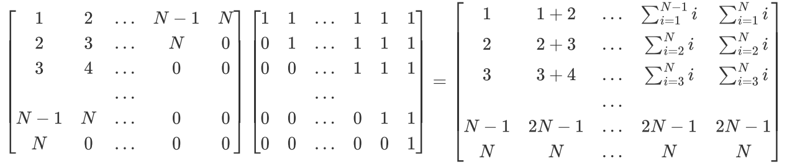
这样就包含了我们前面列举的所有ThisSum的情况，也就是我们只需要比较结果矩阵的元素获取最大值即可，也就打破原来存在的依赖。这是我最开始想到的解决方案，但是很明显这里引入了乘法，但是因为在最开始探索时看了很多快速矩阵乘法的优化方法，包括看到过一个论文的报道Discovering faster matrix multiplication algorithms with reinforcement learning | Nature，我盲目地估计了矩阵乘法的速度，参考资料实现了简单的优化后的矩阵乘法算法后，经过测试后，发现还是得不偿失的，这也提醒我在开始优化前，需要合理地评估代价。
下面是参考OpenBLAS项目与矩阵乘法优化实现的矩阵乘法（使用GEMM优化），主要的逻辑也就是在大矩阵进行乘法时，进行8*8的分块，每次对这一分块进行并行的乘法运算，以加速矩阵乘法，但是结果比优化前慢，说明引入乘法是很不明智的，也是我探索过程中踩过的一个坑。
1 | //8x8 multiplication with AVX2 speeding up(element of the whole mult with GEMM) |
3.4.2 调换循环顺序来解决依赖
虽然上面的算法修改结果并不理想，但是也给了我一些启示。既然上面的矩阵方法引入了矩阵乘法的操作来实现所有ThisSum的计算，则同样地，我们是否可以用其他的方法，来列举得到所有的可能值，从而也就可以相应地获得最终的最大值？这也就是第二种想法的由来。
注意到，每一次ThisSum都是从单独的一个T[k]元素开始，逐步的累加，那么其实以不同的T[k]开头的值对应的这一组ThisSum是无关的，也就是说外层循环之间是无关的，相关性来自内层循环。利用这一点，我们可以尝试下面的这一思路，简单起见，我们假设每个向量包含两个元素。
按照上图的方法，我们把8个元素分为4组，每一组用一个向量表示，再设置一个记录max值的向量，包含两个元素。第一次我们将各个值load到这些向量中，与max中的向量比较，只要是大于对应lane的值，则替换，否则保持不变。此后，每一次我们对各个元素左移一位，如图操作，再与前一次得到的向量进行加减。这样每一个向量可以表示两个T[k]对应的ThisSum最终值，每次加法操作表示一次叠加，也就是上图中0可以表示T[0]，每加一次，就从T[0]+T[1]+...+T[i]变为T[0]+T[1]+...+T[i]+T[i+1]，1则表示T[1]开始的。这样我们就可以并行地操作一个向量中包含多个系列的ThisSum值，从而实现向量化并行。
具体的算法实现如下，实际一个向量包含8个元素：
1 | for(l=0; l<N; l++) |
实际的效果上有所提升，但是也并没有老师说的10倍以上，但是至少也有所改进。对于这一个双层循环我能想到的方法也只有这两种，当然通过-O3优化过程中可以看到还是有一些地方可以进一步优化，但是精力有限，就暂时优化到这一层面，进一步的优化还是交给编译器。
三、效果分析
1. O(N^6)优化效果
因为size过大对于O(N^6)的算法十分不友好，在不加-O3的情况下，会花费过长时间，故此处选择最大为64：
| Size | 16*16 | 32*32 | 50*50 | 64*64 |
|---|---|---|---|---|
| Without SIMD | 1.64*10^-3 | 9.52*10^-2 | 1.31 | 5.77 |
| With SIMD | 1.10*10^-3 | 3.46*10^-2 | 3.45*10^-1 | 1.30 |
| Scale | 1.49 | 2.75 | 3.80 | 4.44 |
| Picture | 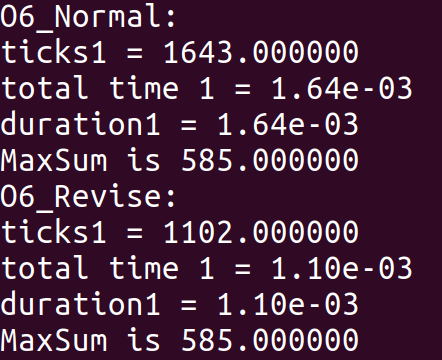 | 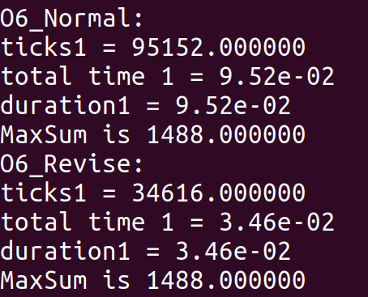 | 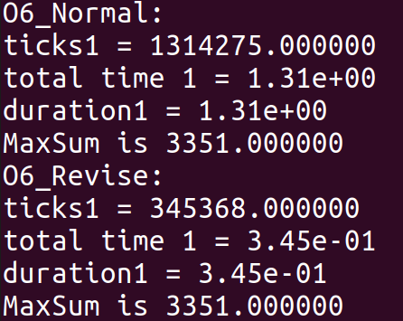 | 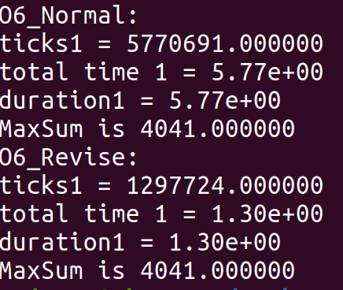 |
使用-O3进一步优化后：
| Size | 32*32 | 50*50 | 64*64 | 100*100 |
|---|---|---|---|---|
| Without SIMD | 2.01*10^-2 | 2.98*10^-1 | 1.31 | 19.3 |
| With SIMD | 9.02*10^-3 | 8.52*10^-2 | 3.11*10^-1 | 3.29 |
| Scale | 2.23 | 3.50 | 4.21 | 5.87 |
| Picture | 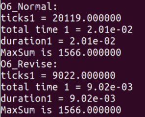 | 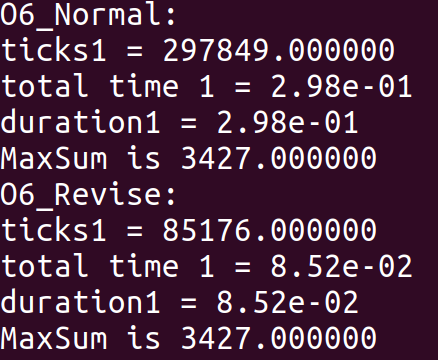 | 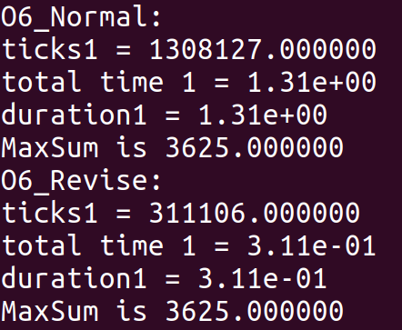 | 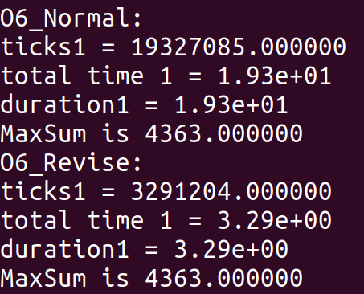 |
整体的提速效果随着矩阵的大小而提高，一般能提高3-4倍左右，但是由于O(N^6)算法时间复杂度随N增长过快，对过大的矩阵还是会需要很长时间。
2. O(N^4)优化效果
对于不加-O3的编译情况：
| Size | 50*50 | 64*64 | 100*100 | 500*500 |
|---|---|---|---|---|
| Without SIMD | 4.19*10^-3 | 1.12*10^-2 | 6.89*10^-2 | 44.5 |
| With SIMD | 3.35*10^-3 | 9.17*10^-3 | 4.44*10^-2 | 25 |
| Scale | 1.25 | 1.22 | 1.55 | 1.78 |
| Picture | 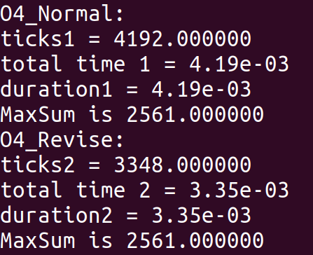 | 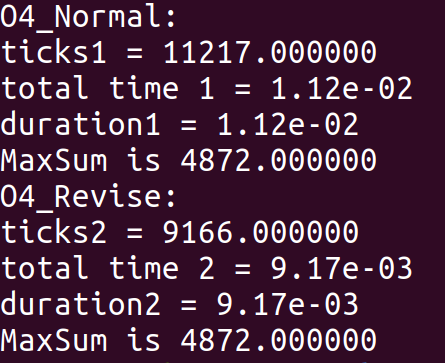 | 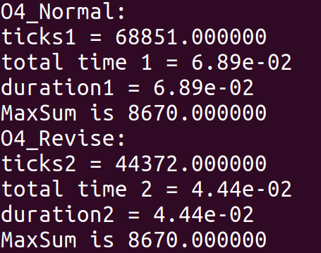 | 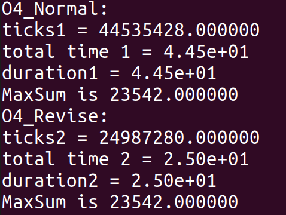 |
加-O3的情况：
| Size | 50*50 | 64*64 | 100*100 | 500*500 |
|---|---|---|---|---|
| Without SIMD | 6.62*10^-4 | 1.89*10^3 | 1.25*10^-2 | 10.6 |
| With SIMD | 2.55*10^-4 | 6.13*10^-4 | 3.31*10^-3 | 1.67 |
| Scale | 2.60 | 3.83 | 3.78 | 6.35 |
| Picture | 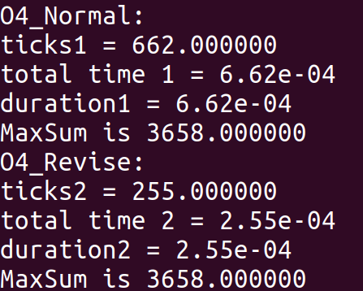 | 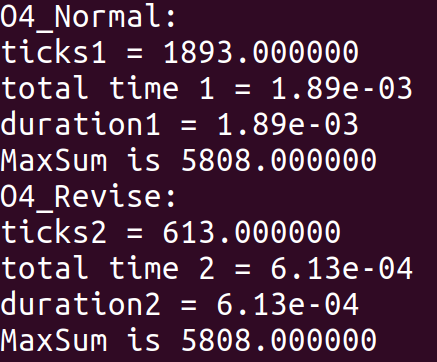 | 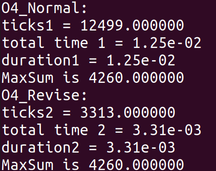 | 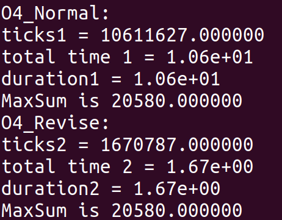 |
可以看到，在不加-O3的情况下，提速其实并不理想，但是通过我的加速方法，再通过编译器的加速，发现效果很显著，甚至在500*500时达到了6倍多，说明我的加速方法为编译器提供了更好的加速条件。
四、心得体会
在最开始做这个实验时，我其实有些眼高手低，一开始就挑选很大的工程比如数据库着手，想很快看到10倍以上的提速效果。但是现实是，我其实连课上讲解的向量化方法都没有完全弄清晰，一上来就选择这样困难的程序，无疑是很难实现的。后来我也转而打算分析一些库的向量化加速手段，比如Eigen，Pytorch2.0等等，但还是希望能够动手去实现提速，毕竟“纸上得来终觉浅，绝知此事要躬行”，只有自己动手加速过，才有更深的体会。
后来我选择了最大子矩阵和的算法，一开始还担心会不会过于简单，和上课讲的之前同学的双边滤波算法、曼德勃罗集这些听起来高大上的算法相形见绌。但是在实际加速过程当中，我也遇到了很多问题，并没有自己想的那样顺利。虽然最后提速效果还是没能达到10倍以上，但是我还是很满意，通过自己的分析，找到了为我自己代码加速的钥匙，其间也花了很多时间不断思考和尝试，尤其在条件判断的向量化这一点上。通过动手尝试，我虽然遇到了很多问题，但是也看到了有很多上课不曾讲到的细节，这些也是只有真的去尝试，才能有所体会的，是我本次实验很大的一个收获。
五、经验教训
在做这个实验时，我遇到了很多问题，包括指令层面、加速算法层面等等。
- 在最初使用AVX2的
intrinsics时，比较不熟练。我最开始使用int型存储的矩阵，所以需要用到epi32等后缀，但是在这一点上，由于int型变量存在加法/乘法的溢出现象，有时候32位的int体现在乘法时，会只支持epi16的乘法，这样就会造成很多复杂的情况。所以最后我还是改用了浮点数，使用ps的后缀，这样就避免了不一致的问题。同时，在使用load和store时，我遇到过一段代码在不同位置，有些可以运行，有些不能的情况，后来发现是在于这两个指令默认是对齐存储的数据，但是很多情况对应的数据是不对齐存储，所以就造成了这一个问题，只需要使用loadu/storeu即能解决问题。 - 在探究有条件判断的加速算法时，我最开始没有很好地估计乘法带来的巨大开销，从而在最开始就选错了优化的方向，结果自然是得不偿失。而在代码优化过程中，我发现有时候很微小的调整反映在代码运行速度上，会产生巨大的影响，比如默写
load操作的位置是否是精确无重复的等等，需要很审慎地处理。 - 在向量化加速时，同样需要注意结果的准确性，很多时候确实速度是提上来了，但是一旦结果出错，所有加速都是无用的，我碰到很多次因为循环展开计数不是8的倍数或者部分值没有及时归0，而造成的结果不一致的问题，需要着重考虑这一点。
- 此外，我也尝试了多线程的编程进行加速，但是在本题的循环中效果很不理想，推测是因为频繁的
pthread_create的同时还需要对每个线程的MaxSum的加锁互斥，造成了比较大的开销。